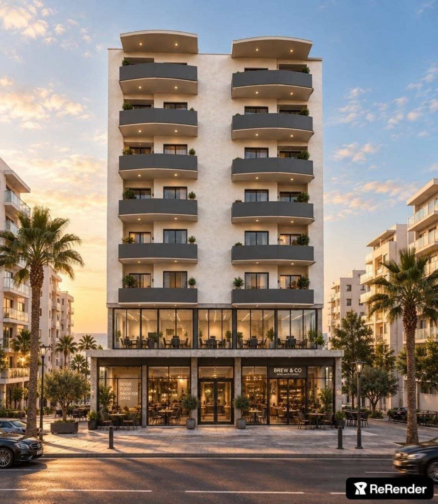
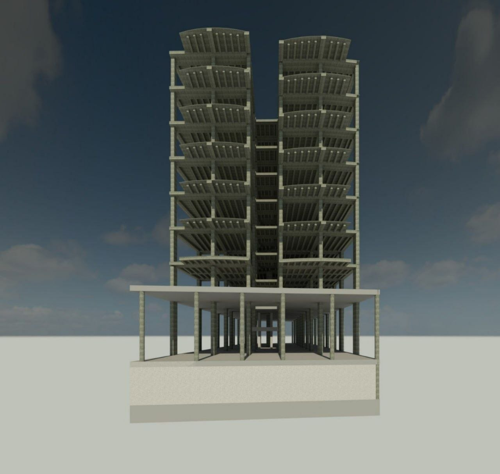
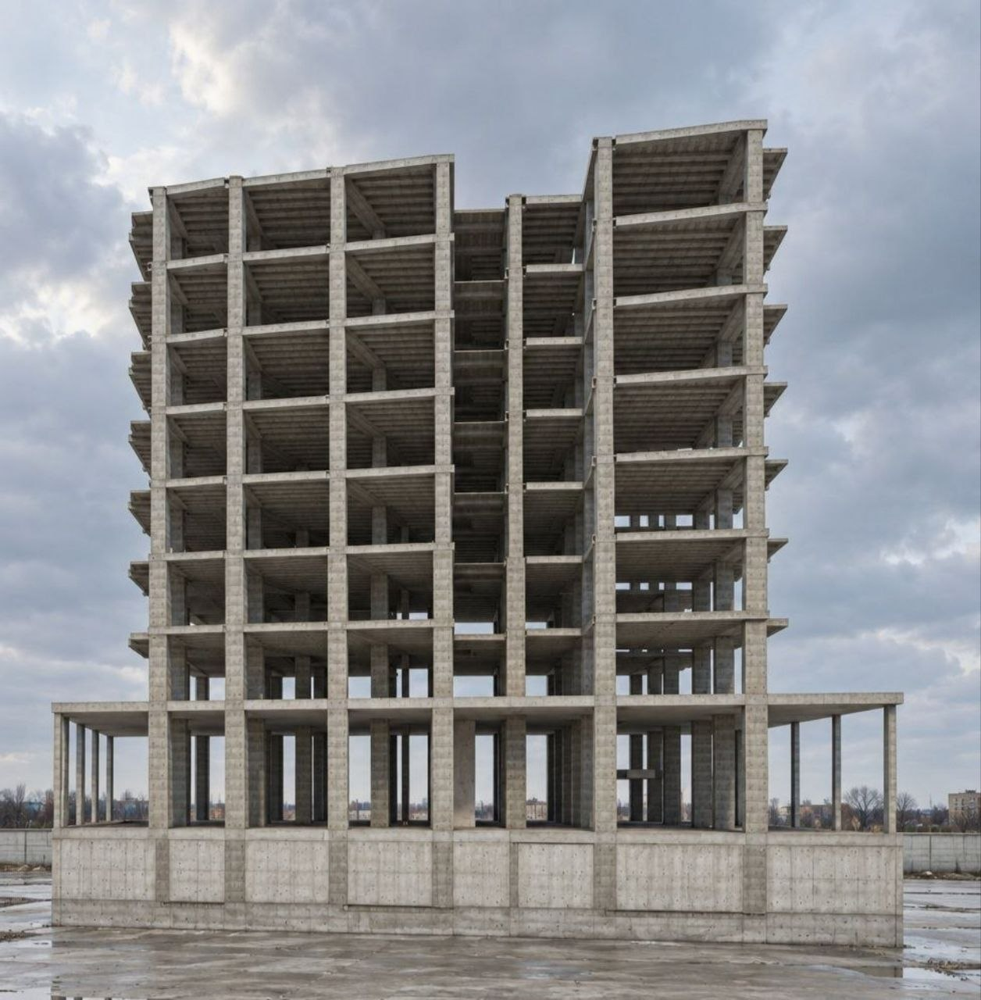
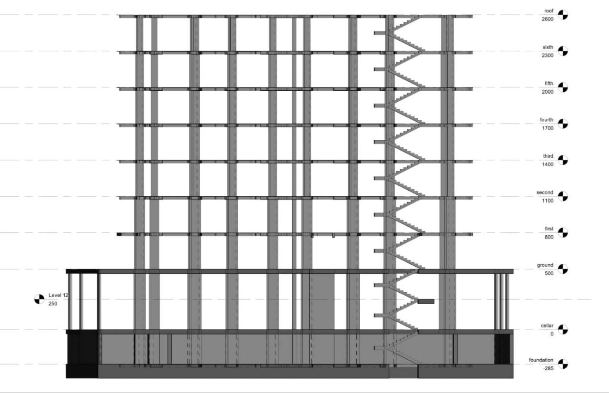

Building ideas.
Modeling reality.
3rd-year Civil Engineering student seeking a Working Student or Internship position in Structural Engineering / BIM Modeling.
About me
Motivated by structural design, digital construction workflows and the challenge of turning real buildings into accurate BIM models.
I am a highly motivated civil engineering student currently in my 3rd year. As part of my dedication to mastering BIM technologies, I am actively seeking an entry-level opportunity to contribute to a professional engineering team.
This portfolio highlights my first Revit Structure project — a self-directed exercise in which I recreated a real-world multi-story concrete building based solely on site photographs.
Concrete Building
Revit Structure Study
My first Revit Structure project, developed from site photographs as a practical exercise in structural BIM modeling.

From photograph to BIM model
The goal was to interpret the visible structural system and recreate the building as a coherent Revit Structure model, including the concrete frame, levels, stair circulation and structural sections.



What I practiced
The project was intentionally built as a challenge: understand the structure from photographs, model it, then extract useful documentation.
Interpret
Study site photographs to identify columns, slabs, floor levels, stairs and the overall structural grid.
Model
Develop the structural framing and vertical circulation in Revit while maintaining consistent alignment.
Document
Generate 2D structural sections and level information directly from the BIM model.
Open to the next challenge.
I am eager to apply my academic foundation and growing BIM skills to real projects, and I welcome technical feedback that can accelerate my learning.